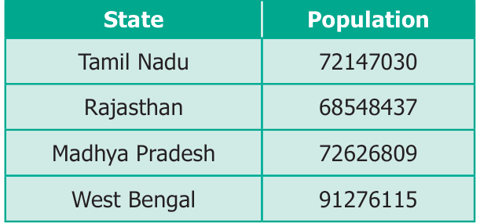
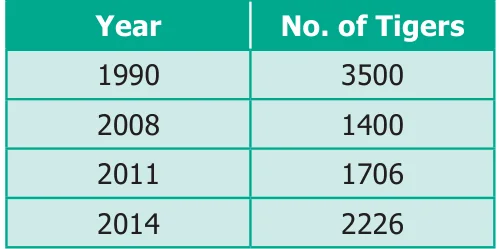

Objective Type Questions
- \((53 + 49) \times 0\) is
(a) 102 (b) 0 (c) 1 (d) \(53 + 49 \times 0\) - \(\frac{59}{1}\) is
(a) 1 (b) 0 (c) 1 59 (d) 59 - The product of a non-zero whole number and its successor is always
(a) an even number (b) an odd number
(c) zero (d) none of these - The whole number that does not have a predecessor is
(a) 10 (b) 0 (c) 1 (d) none of these - Which of the following expressions is not zero?
(a) \(2 \times 0\) (b) \(0 + 0\) (c) \(2 + 0\) (d) \(0 - 0\) - Which of the following is not true?
(a) \((4237 + 5498) + 3439 = 4237 + (5498 + 3439)\)
(b) \((4237 \times 5498) \times 3439= 4237 \times (5498 \times 3439)\)
(c) \(4237 + 5498 \times 3439 = (4237 + 5498) \times 3439\)
(d) \(4237 \times (5498 + 3439) = (4237 \times 5498) + (4237 \times 3439)\)
Miscellaneous Practice Problems
- Try to open my locked suitcase which has the biggest 5 digit odd number as the password comprising the digits 7, 5, 4, 3 and 8. Find the password.
- As per the census of 2001, the population of four states are given below. Arrange the states in ascending and descending order of their population.

- Study the following table and answer the questions.

- How many tigers were there in 2011?
- How many tigers were less in 2008 than in 1990?
- Did the number of tigers increase or decrease between 2011 and 2014? If yes, by how much?
- Mullaikodi has 25 bags of apples. In each bag there are 9 apples. She shares them equally amongst her 6 friends. How many apples do each get? Are there any apples left over?
- A poultry has produced 15472 eggs and fits 30 eggs in a tray. How many trays do they need?